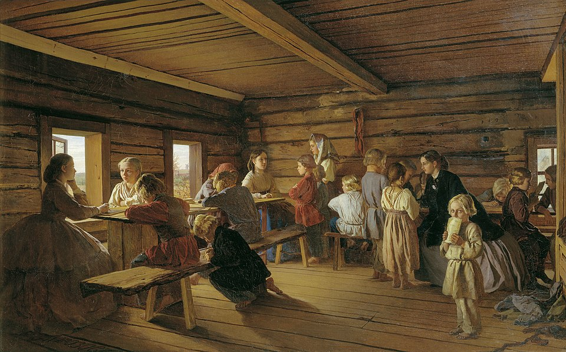
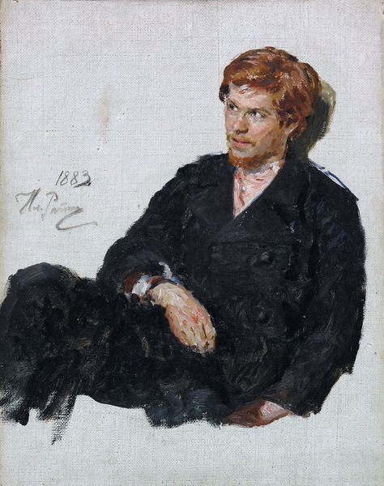

Progress

If the reader takes progress to mean something other than mere change, rather relating it to notions of positive development and improvement, whether they relate to technological advancements, social and political reform, or shifts in attitude, one is hard-pressed to find an example of “progress” in Anna Karenina that is free from negative by-products. Trains shorten travel times dramatically and change travelers’ spatial and temporal experience (Schivelbusch 55), but are also the site of two deaths. The spread of new ideas from Western Europe also ushered in nihilism, and “the newest philosophy, represented by Schopenhauer, had also come to the conclusion that ‘happy is he who has never been born, death is better than life’ and the logical correlative that ‘The best solution to the terrible dilemma was suicide [or] Epicureanism, unconsciousness, or––for men who were wise but weak […] the acceptance of life as it was, in full awareness of the fact that it was senseless and evil’” (Walicki 329), a struggle that is reflected in Konstantin Levin. The Great Reforms––which resulted in “Each of its components […] little short of a social revolution: the creation of a new social group of free peasants, legislative intervention into the sphere of private property, scientifically and morally rationalized redistribution of land among economic actors, and complex financial schemes involved in the redistribution of rights and wealth” (Gerasimov 172)––are discussed by virtually every character in the novel, in negative and positive ways.
One might note, for example, Levin’s engagement with zemstvo activity. The zemstvos, “all-estate bodies of self-government at the district and provincial levels,” purported to replicate the model set forth by other European nations of the time when they were established by Alexander II on January 1, 1864 (Gerasimov 176–77). As Gerasimov writes, “self-government had become the epitome of Europeanness: it promised the inclusion of the nation in public administration without radical democratization of the political order” (Gerasimov 177). This being so, the reader’s first encounter with Levin in Part One features a biting critique of the zemstvo as it actually was: “to put it bluntly, I became convinced that there is no zemstvo activity, nor can there be […] on the one hand, it’s a plaything, people playing at parliament, and I am neither sufficiently young nor sufficiently old to amuse myself with playthings, but…on the other hand, it is a way for the local coterie to make a bit of money […] not in the form of bribes, but unearned salaries” (21). Taking a step forward into a greater degree of verisimilitude to their European neighbors, Levin, and by extension Tolstoy, prods at what might be evidence to the contrary––very little change under the guise of progress. For another view of how Tolstoy deals with progress polemically, the reader might look at the great interest that Arseny Lvov has towards his children’s education, and the corresponding skepticism in others’ view of these changes. During Levin’s visit, Lvov discusses the educational model that he has implemented in his children’s upbringing; as opposed to the standard way of educating one’s sons, Lvov compares education to warfare, stating the difficulties in giving children a moral education: “You’ve barely managed to conquer one tendency when others spring up, and you have another battle on your hands” (685). This not only reflects new models of education proposed by figures like Rousseau, which centered around the immense care with which an educator (in this case, the father) must take in developing the child’s character as well as knowledge about the world (see Rousseau’s Emile), but also extremes one must take in committing to this new model. Natalya Lvova voices skepticism of her husband’s practices in the following manner: “If you look for perfection, you will never be satisfied. And it’s true what Papa says, that there was one extreme when we were being brought up––we were kept in the attic, while our parents lived on the first floor; now it's the opposite––the parents are in the box-room, and the children are on the first floor. Parents aren’t supposed to have a life now, as everything is for the children” (686). Progress, therefore, is problematized by the characters of Anna Karenina, unable to escape the scrutiny of onlookers witnessing changes in how things have always been done.
Works Cited
- Gerasimov, Ilya, et al. A New Imperial History of Northern Eurasia, 1700–1918. 1st ed., Bloomsbury Publishing, 2025.
- Schivelbusch, Wolfgang. "Panoramic Travel." The Railway Journey: The Industrialization of Time and Space in the Nineteenth Century. University of California Press, 2014, pp. 52–69.
- Walicki, Andrzej. A History of Russian Thought from the Enlightenment to Marxism. Translated by Hilda Andrews-Rusiecka, Clarendon Press, 1980.